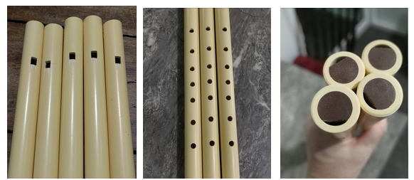

# สวัสดีครับ --- ## วิชา พื้นฐานขลุ่ยเพียงออ 2 (ศ22204) ### นักเรียนชั้นมัธยมศึกษาปีที่ 2 --- ## แนะนำครูผู้สอน ### นางสาวปณิดา สุวรรณนุรักษ์ <br> (ครูปั่น) วิทยาลัยนาฏศิลปจันทบุรี สถาบัณฑิตพัฒนศิลป์ --- <!-- # นายวรุฒ บุญประเสริฐ ## กลุ่มสาระการเรียนรู้ศิลปะ โรงเรียนชำนาญสามัคคีวิทยา --- --> ## วิชา พื้นฐานขลุ่ยเพียงออ 2 (ศ22204) ### นักเรียนชั้นมัธยมศึกษาปีที่ 2 --- ## วิชา พื้นฐานขลุ่ยเพียงออ 2 (ศ22204) ### นักเรียนชั้นมัธยมศึกษาปีที่ 2 นายวรุฒ บุญประเสริฐ กลุ่มสาระการเรียนรู้ศิลปะ โรงเรียนชำนาญสามัคคีวิทยา --- # ข้อตกลงในชั้นเรียน --- ## ข้อตกลงในชั้นเรียน  1. ถอดรองเท้าไว้หน้าห้อง จัดระเบียบให้เรียบร้อย --- ## ข้อตกลงในชั้นเรียน  2. ตั้งใจเรียน ไม่พูดคุยเสียงดัง หรือใช้ถ้อยคำหยาบคาย รบกวนการเรียนการสอน --- ## ข้อตกลงในชั้นเรียน  3. ใช้โทรศัพท์ให้ถูกเวลา (หากต้องการถ่ายรูปถ่ายวิดีโอในห้องเรียนให้ขออนุญาตครูผู้สอนก่อนเสมอ) --- ## ข้อตกลงในชั้นเรียน  4. ไม่เล่นเครื่องดนตรีไทยโดยไม่ได้รับอนุญาต --- ## ข้อตกลงในชั้นเรียน  5. ช่วยกันรักษาความสะอาดในห้องเรียน --- # จุดประสงค์การเรียนรู้ --- ## จุดประสงค์การเรียนรู้ 1. เพื่อให้นักเรียนรู้จักความเป็นมาของขลุ่ยเพียงออ 2. เพื่อให้นักเรียนรู้จักวิธีการดูแลรักษาขลุ่ยเพียงออ 3. เพื่อให้นักเรียนสามารถอ่าน/เขียนโน้ตดนตรีไทยได้ 4. เพื่อให้นักเรียนสามารถบรรเลงขลุ่ยเพียงออในเพลงง่าย ๆ ได้ --- # เนื้อหา --- ## เนื้อหา 1. ประวัติความเป็นมาของขลุ่ย/ขลุ่ยเพียงออ 2. วิธีการดูแลรักษาขลุ่ยเพียงออ 3. การอ่าน/เขียนโน้ตดนตรีไทย 4. การบรรเลงขลุ่ยเพียงออในเพลงง่าย ๆ --- ## เกณฑ์การให้คะแนน ### กลางภาค * คะแนนเก็บ 40 * สอบ 10 ### ปลายภาค * คะแนนเก็บ 40 * สอบ 10 ### <red>รวม 100 คะแนน</red> --- # กิจกรรมแรก สำหรับวันนี้ <style type="text/css"> img { width: 250px; } </style>   --- ## การ์ดแนะนำตัว เปลี่ยนชื่อเล่นเป็น ชื่อจริง+เลขที่ ใน Messengers ให้นักเรียนทำการ์ดแนะนำตัว ตามตัวอย่าง จากนั้นให้นักเรียนส่งให้ครูผ่านทาง Messenger กลุ่ม/ส่วนตัว  --- ## การเลือกซื้อขลุ่ย 1. ซื้อที่ร้านเครื่องเขียน 2. Shopee, Lazada (คีย์ไทย) 3. ฝากครูซื้อ 4. ขลุ่ยยืมเรียน เป็นขลุ่ยบริจาคของรุ่นพี่ <br> <red> ข้อแนะนำ ดากขลุ่ยทำจากไม้ </red> --- ฝากครูซื้อ  นักเรียนที่สนใจฝากครูซื้อขลุ่ย 50.- บาท ให้ลงชื่อในกลุ่ม นักเรียนยังไม่ต้องจ่ายเงินก่อน เมื่อขลุ่ยมาถึง ครูจะแจ้งให้นักเรียนทราบ <br>
5 minutes timer